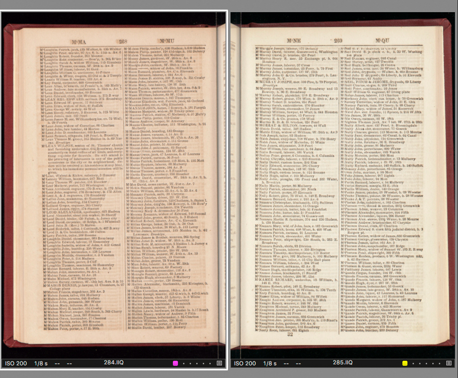

Machine Setup
- Allow lights to warm for approximately 15 minutes
- Clean both sides of platen and dust area
- Create identical sessions on left and right computers
- Determine camera height based on size of book, and possibility for moiré pattern. (Note: moving the camera up or down 1-2" can mitigate egregious moire)
- Typical lens exposure settings: f-8.3 at 15 +⅔ sec. f-8.4 may be necessary when shooting larger material
- Adjust targets to accommodate book size, and to fit in frame (more space can be allowed between book and target than copy stand photography—approximately 2”)
- Open book to approximate center spread place book in the center of the book cradle
- Readjust book cradle to snugly fit the thickness of the spine
- Carefully lower the platen with hand buttons or pedals, paying attention to how the material is reacting to the pressure of the glass (more info in notes)
- Focus and confirm that resolution is the same in both sessions
- Always use premade LCC. The name of the lens cast correlates to camera height. Set uniform light correction to 15% (this is so that the gutter of the page is not overexposed from light bounce)
- Set white point to 239/240
- Make identical crops in both sessions (set a consistent height and create even placement around page)
- Use guides with crop to create even padding around each page. This will help ensure a consistent, uniform crop area throughout the book.
Shooting
- Open book to inside cover, use foam to raise book to meet glass platen and adjust width of cradle, if necessary.
- Use a floating focus tool window to make sure each shot is sharp, unaffected by camera shake or motion blur.
- Begin capture maintaining crop position
- Raise and lower platen with foot pedals slowly, manually turning pages between captures.
- Every 5-10 shots, be sure to keep track of page numbers and total captures on both computers. It is easy to miss pages.
- Moving through the book, the cradle and foam padding will need to be adjusted so that the platen sits evenly.
-
Proceed to end of book. (continued on next page)
- To shoot front and back covers: open opposite side of cradle completely—this will allow the platen to accommodate the entire thickness of the book resting on one side of the cradle.
- Rename front cover of book so that it is the first image in the session
- For additional tips, see Notes
Processing
Before Merging Sessions
- Confirm that total capture counts are the same, and check pagination individually.
- Adjust all white points to 240 (with a tolerance of +/- 1 point RGB) and adjust crops
- Apply moiré filter to all shots if needed.
- Batch rename with 4-digit counter, rename counter increment set to 2 (left side starts with 0001, right side starts with 0002), apply different color tags per side (so that when the session are merged it is easy to sort by color)
- Close Capture One on both computers
Merging Session to Left Computer
- Open a Terminal session on the left computer.
- Type sessionmerger
- When prompted to drag in your Capture folder, drag the Capture folder from your Capture One session that you’d like to work with after the merge and press return.
- When prompted to drag in your Capture folder again, drag the Capture folder from the session where your additional files to be merged are located and press return
- The script will then use rsync to merge all captures and settings files from the second Capture One session into the first.
Things to consider:
- You’ll need two sessions handy that you’d like to merge.
- Session merger works recursively and will grab everything in the Capture folder you’d like to move, including all settings files (crops, moire adjustments, neutral balance, lens cast files, etc.)
- If you need to merge two sessions on two different computers, it may be easiest to first upload the Capture folder from one session to the server. Sessions can then be merged directly from the server.
After merging sessions:
- Open session on left computer and confirm that pagination is accurate throughout entire book by inspecting each capture.
- The white balance will need to be matched on both sides (it is helpful to manually adjust values in the white balance tool). After matching, make sure the neutral gray patches are still within 3 points of each other.
- On MMS work order: add total captures, assign image ID’s and process s and u files.

Before uploading to server for QC:
- Perform a quick check on TIFF files for ICC profiles, any noticeable color shift from side to side, and that all s files are cropped.
- Use terminal to transfer files to server folder as normal
Additional Notes for using the BC100 Book Scanner
- Foam padding should be used to support either cover of the book, so that the platen can evenly rest on the pages.
- Some pages are glued or bound differently than others, and will crease or break unless given extra padding with foam behind the individual page.
- Be cautious while raising and lowering the platen. Do not let the platen hit the bumpers when raising, to avoid camera shake. It is necessary to wait a moment after lowering the platen into place, before firing the shutters—otherwise, camera shake will inevitably affect the sharpness of the image.
- Try to have all text visible in gutter. Some books are very tightly bound but can still be photographed on the BC100
- Color adjustments are made only when sessions are merged into one.
- If book skips page numbers make note in trello
- Look for foldouts and anything else requiring special handling some fold-outs can be done at the BC-100
- The white point can only vary by one point in order to maintain continuity and ease of color balancing
- Watch for shadows created by leaning in over the platen
- Ensure shutter release plate is pressed evenly so that both shutters are released simultaneously
- It is occasionally necessary to photograph a few pages of a book on a copy stand. This could be necessary due to tight binding that obscures text in the gutter or fragility of the book/page. Book scanner and copy stand shots should have matched PPI. Color matching may be a little tricky. A good tip is to use black flocked backing on the book cradle to match your existing Book Scanner photographs.
Notes for Quality Control
- Check for correct camera profile for each side
- Only with very short books may we shoot an entire book using one camera. This will be noted in Trello in the future. Otherwise, all left-hand pages are shot with the Right camera and should have 0H-TARGET-RIGHT profile. All right-hand pages are shot with the Left camera and should have 0H-TARGET-LEFT profile.
- Check pagination – Important!! It is very easy to skip a page! When in doubt, the fastest way to check this is to look at the original material (perhaps a page is physically missing from the book).
- Crops on s files should be consistent. Think of how the pages will look side-by-side when viewed on Digital Collections.
- Look out for focus issues/camera shake
- No color (red/green) shift between sides of the book